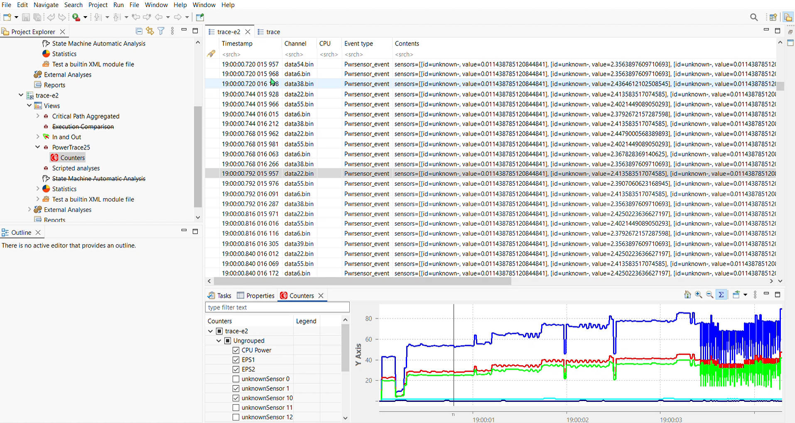

Investigating Energy Telemetry Accuracy of Intel RAPL
Can we do better?
Andy Huo | Ericsson/Polytechnique Montreal | Oct 27 2025
Why improve code energy efficiency
It's not just about the trees...
- Data centers: Reduce cost
- Mobile / Edge computing: Improve battery and service life
- Satellites (Solar power): Increase productivity
Cooling a data center:

- Almost all energy used during computation is converted to heat.
- Thermal management systems are responsible for up to 40% of all energy consumed in a data center.
- Reduced thermal load -> more servers doing more work in same infrastructure
Temperature and component wear and tear

- As a rule of thumb, a 10 °C increase reduces component life by half.
- A 5 °C rise above 40 °C increases hard-disk failure risk by ~30%.
- Improving power/thermal efficiency: keeps components within optimal temperature longer.
- Components live longer.
- Less thermal throttling
Edge computing and Satellites

- Improve battery life
- More work done per watt in power constrained edge computing and satellites
- Improve service life for critical components
>
What is RAPL (Running Average Power Limit)
- Energy prediction models that estimates CPU and DRAM power consumption
- Possible factors:
- Instruction counts
- On-chip sensors
- Telemetry from motherboard (SVID and IMON interface)
- * inferred data source, specific details are undisclosed
Why is this a problem
- More than half the energy-awareness tools use RAPL (single point of failure)
- Data source and methodology is undisclosed for newer CPU models
- Known inconsistencies in prior research
>
Method of investigation
- Precision sensors for obtaining ground truth for energy consumption
- Implementation:
- Sensors intercept power lanes from power supply to components
- Sensors measure voltage and current
- Sensors Relay data to tracing apps (eg. TraceCompass)
Measurement tool proposal
- Sensor intercepting power lanes
- Microcontroller (data collection)
- Data processed externally: minimal overhead
Measurement tool implementation

- Industry standard precision sensors
- High speed microcontroller
- Trace compass integration
Integration with trace compass

- Trace Compass integration with custom plugin
- Sensor tracing: CTF
- RAPL output: UST
- Perform data analysis using TMLL to discover anomalies
Preliminary Results
- Accuracy:
- RAPL demonstrates high degree of noise compare to Sensors
- (Coefficient of variation 0.25 vs 0.08)
- Poor correlation between Intel RAPL and Sensors
- (Spearman's rho = 0.2258)
Questions?

Thank you for listening!
Follow-up: andy.huo@ericsson.com
hhuo2000@gmail.com